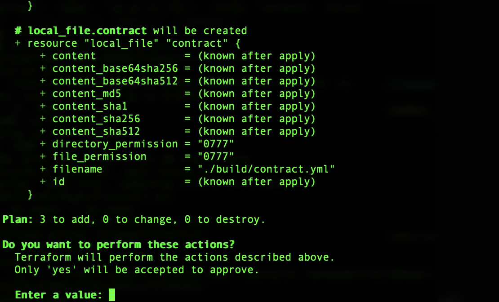
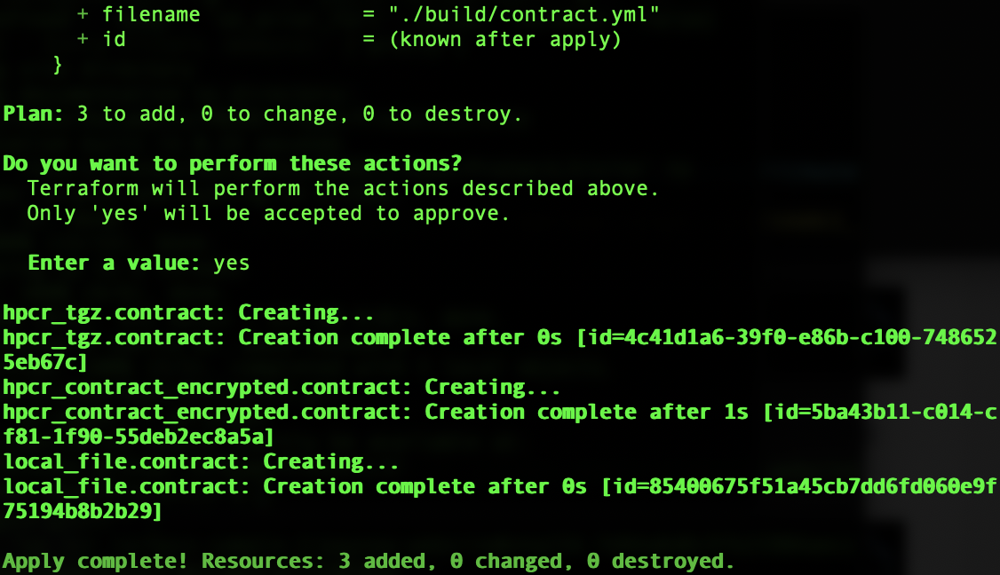

Creation of a Contract for PayNow Application via Terraform
In this module, you will use these tools and technologies to generate a Contract for creation of an HPVS instance with the IBM Hyper Protect Container Runtime (HPCR) image.
- Install the OpenSSL binary on your local machine. More information about the OpenSSL Project can be found within their online documentation: https://www.openssl.org
To install OpenSSL, either read the instructions detailed here (https://www.openssl.org/source/gitrepo.html) or execute the following commands one at a time in your command line interface:
- Install the Terraform CLI on your local machine. Detailed instructions and video instructions for doing so are provided online: https://developer.hashicorp.com/terraform/tutorials/aws-get-started/install-cli
You may either follow the detailed instructions (above) or execute the condensed instructions line-by-line (below):
- Now you are ready to create the
Contract. Use Git to clone the following repository to your local machine (note: this is a different repository to the one you cloned previously):
Alternatively, you can Download ZIP the file manually from the GitHub repository using your web browser.
- Navigate to the following directory:
- Edit the
docker-compose.ymlfile in the/composefolder. You need to specify YOUR container image digest (Step 12 of the previous module) and set the exposed ports to the following. Delete any other lines that were included in the original YAML file by default.
Replicate the following example of a completed docker-compose.yml file. On Line 4 for the argument image:, replace the last <sha256> characters with your container image digest:
Be careful to match the indentation and whitespacing exactly as given below, as YAML files use indentation to parse instructions. When satisfied, save the changes and exit the file.
- Return to the
linuxone-vsi-automation-samples/terraform-hpvs/create-contract-dynamic-registry/directory from Step 4.
Locate the my-settings.auto.tfvars-template file within this directory.
Duplicate this file and then rename it to my-settings.auto.tfvars instead.
Edit the my-settings.auto.tfvars file and replicate (using YOUR IBM Cloud account details) the following example as closely as possible:
Adjust the following values:
-
Line 1: Replace
<your container registry>with the first component of the container registry digest you recorded in Step 13 of the Prerequisites module. Likely this is a value such asus.icr.ioPreserve the double-quotation marks. -
Line 3: Replace
<your API key>with the contents of thekey.pubSSH key that you created and stored locally in Step 8 of the Prerequisites module. Preserve the double-quotation marks. -
Line 4: Replace
<your ingestion key>with the Ingestion Key recorded in Step 2 of the Prerequisites module. This is likely a value similar toa17b8b912bcddda9d84d544d82a74c50. Preserve the double-quotation marks. -
Line 5: Replace
<your ingestion host>with the Ingestion Host recorded in Step 2 of the Prerequisites module. This is likely a value similar tosyslog-a.us-south.logging.cloud.ibm.com. Preserve the double-quotation marks.
When satisfied, save the changes and exit the file.
- To initialize Terraform, execute the following command:
- Generate the Terraform
Contractusing the following command:
You will be prompted mid-way through the process whether you want Terraform to perform the actions prescribed, to which you should respond with yes and hit the Return key.

Once completed, you should see the following screen:

- Display the
Contractthat is created with the Terraform script by running the following:
RECORD the entirety of the contract to a notepad. You will need to reference this information in the following module.
Next Steps
In the following section, you will configure and deploy a Hyper Protect Virtual Servers for VPC instance on IBM Cloud using the freshly generated Contract.